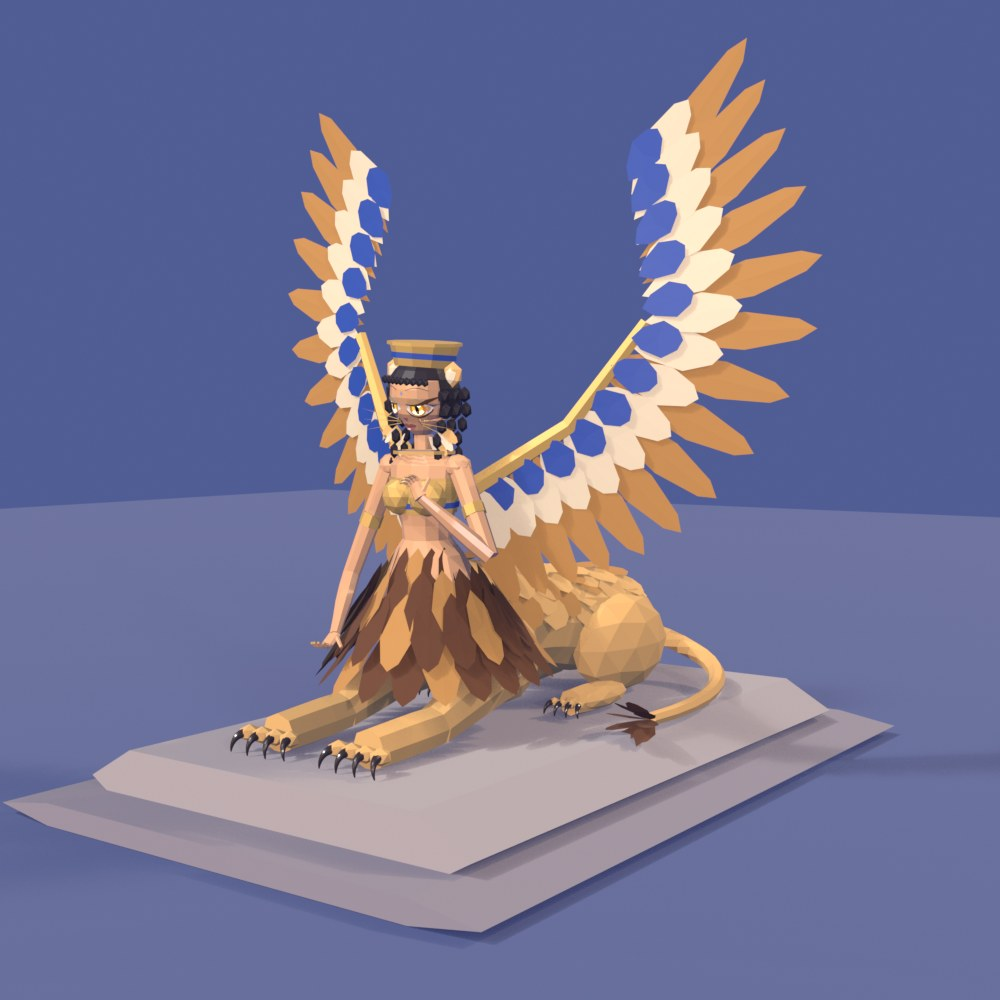
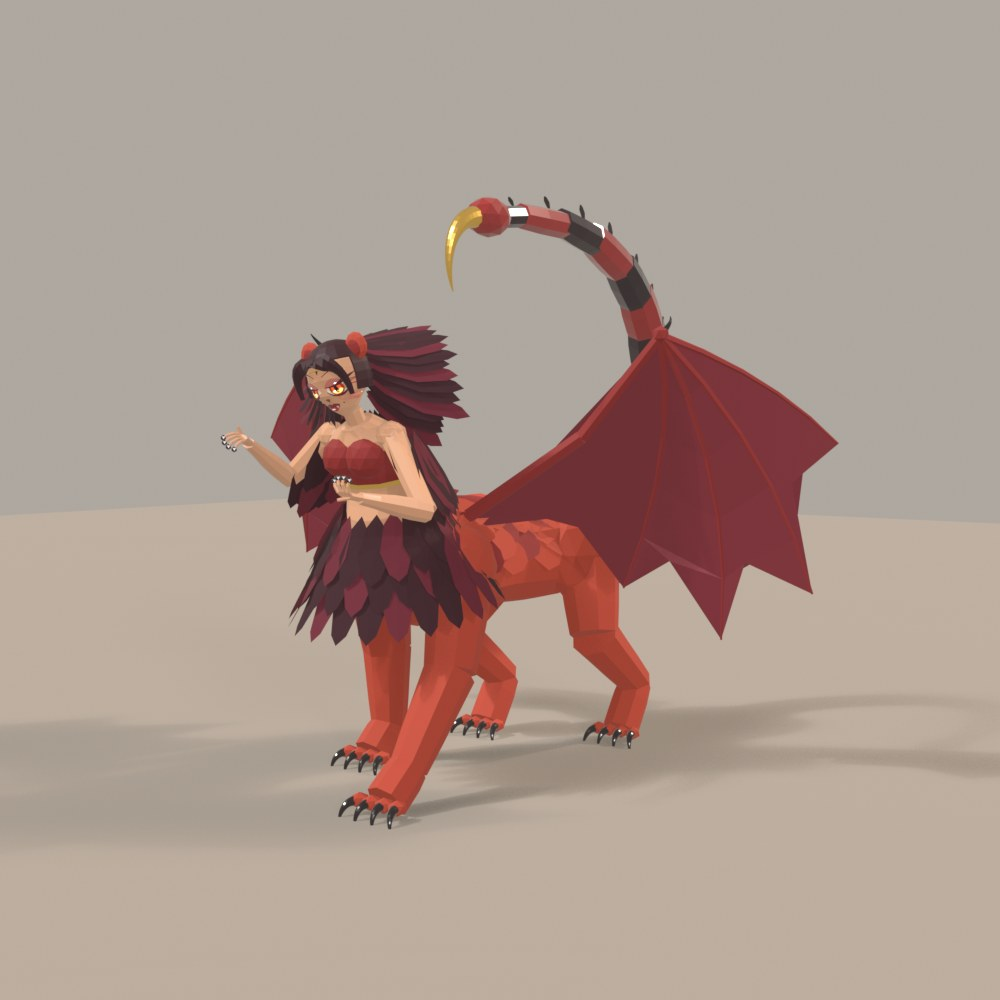
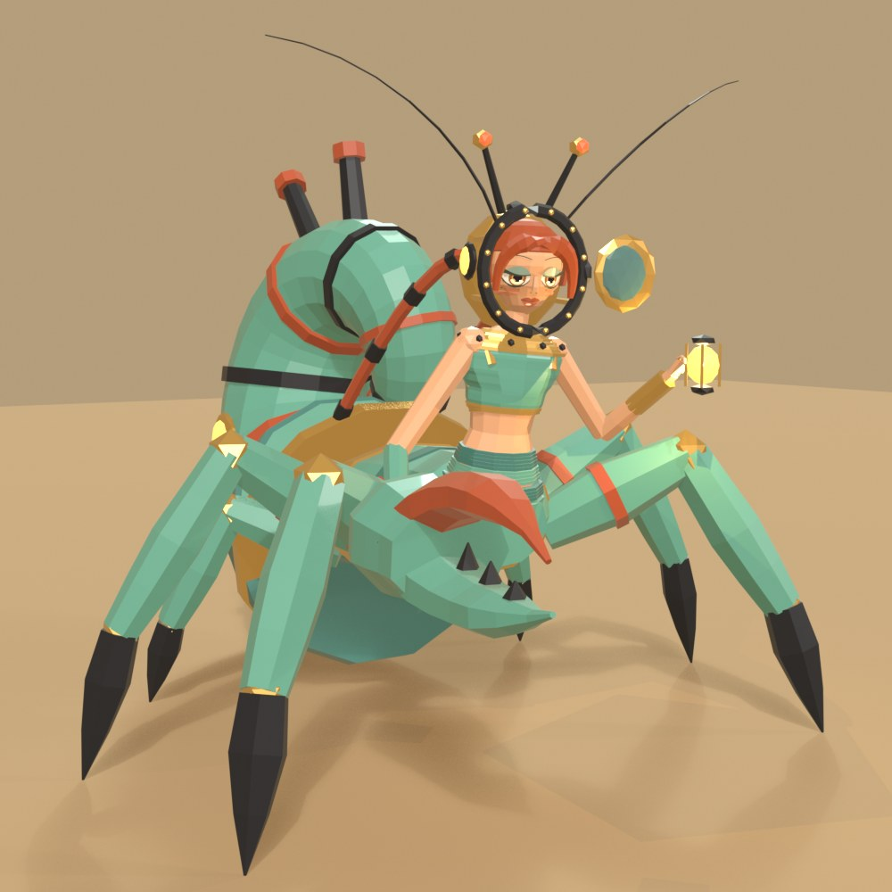
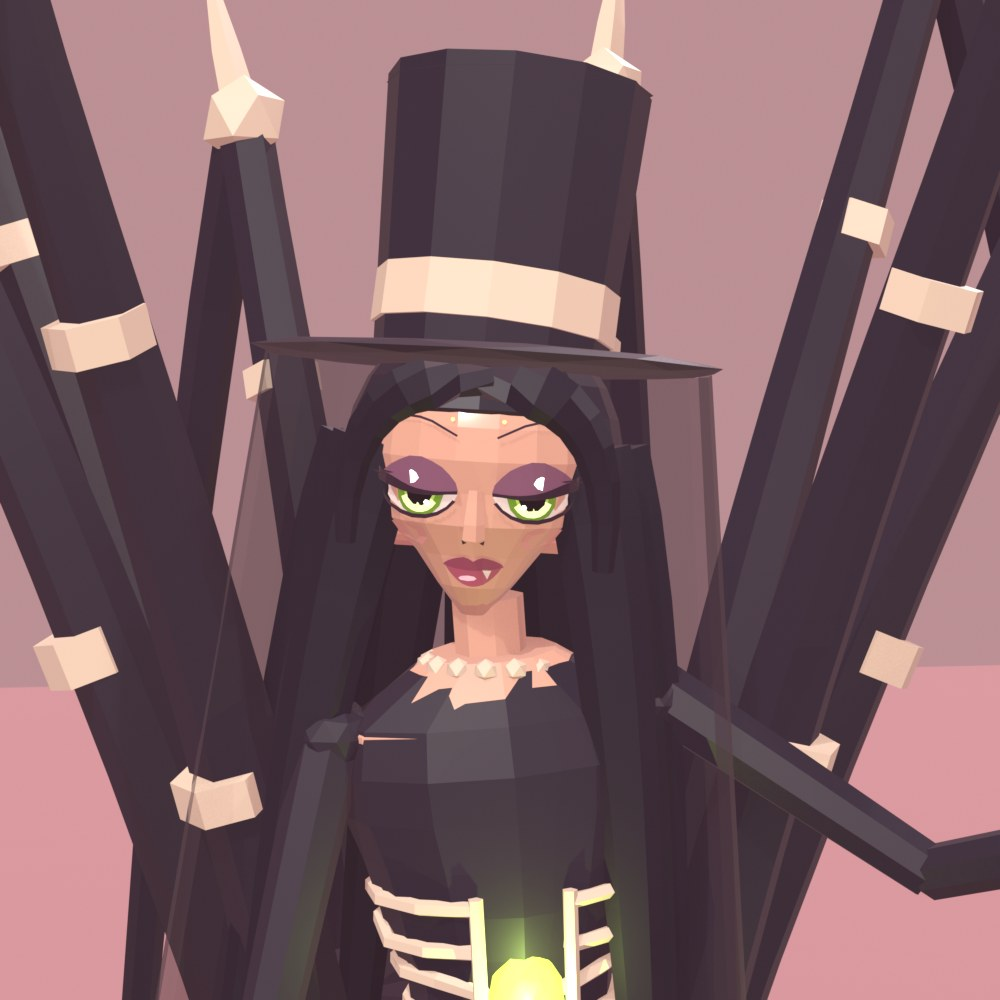
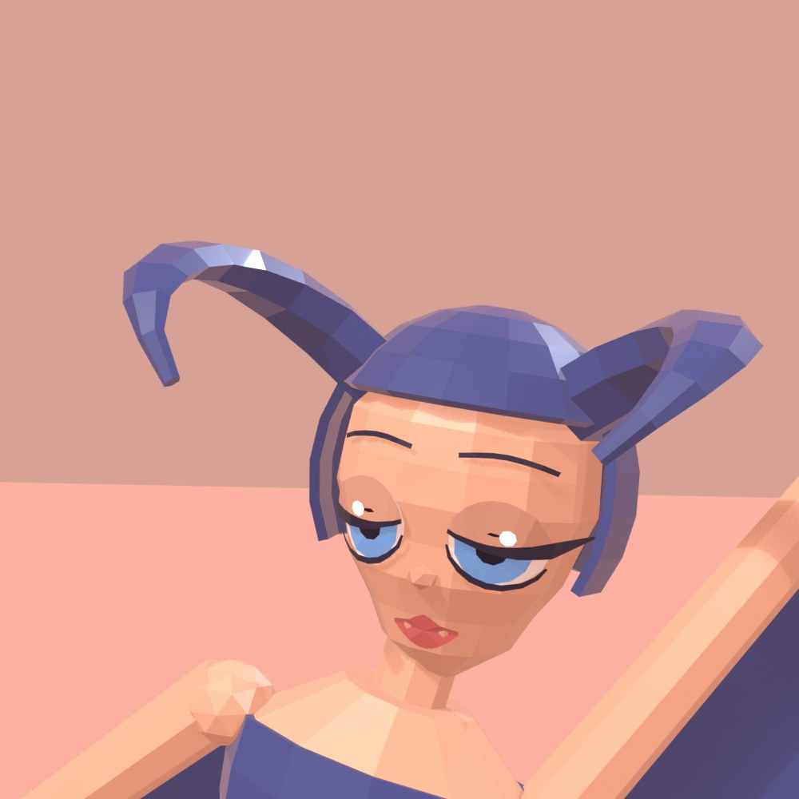
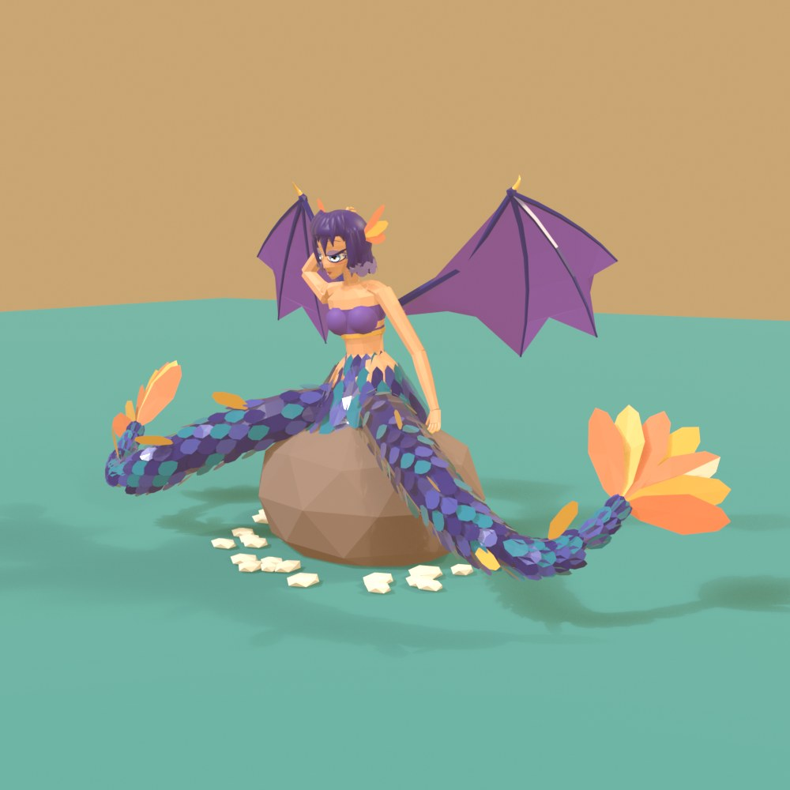
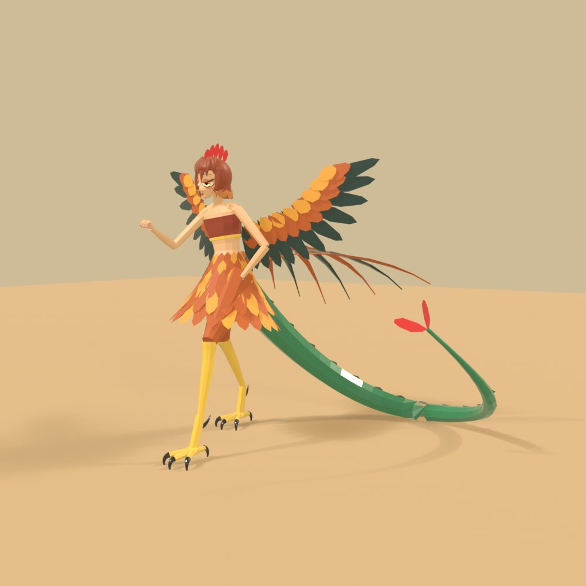
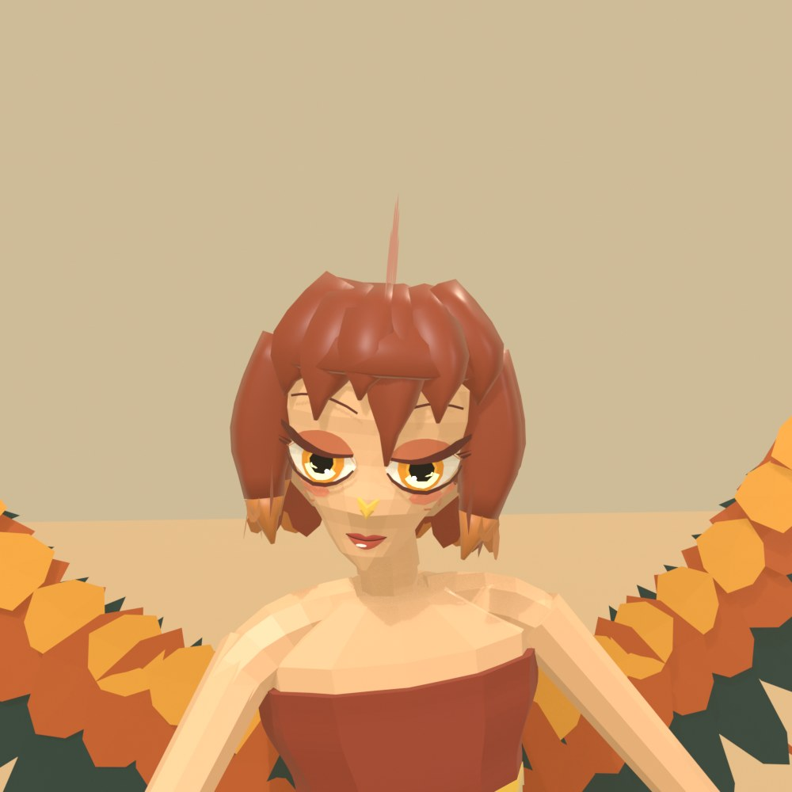
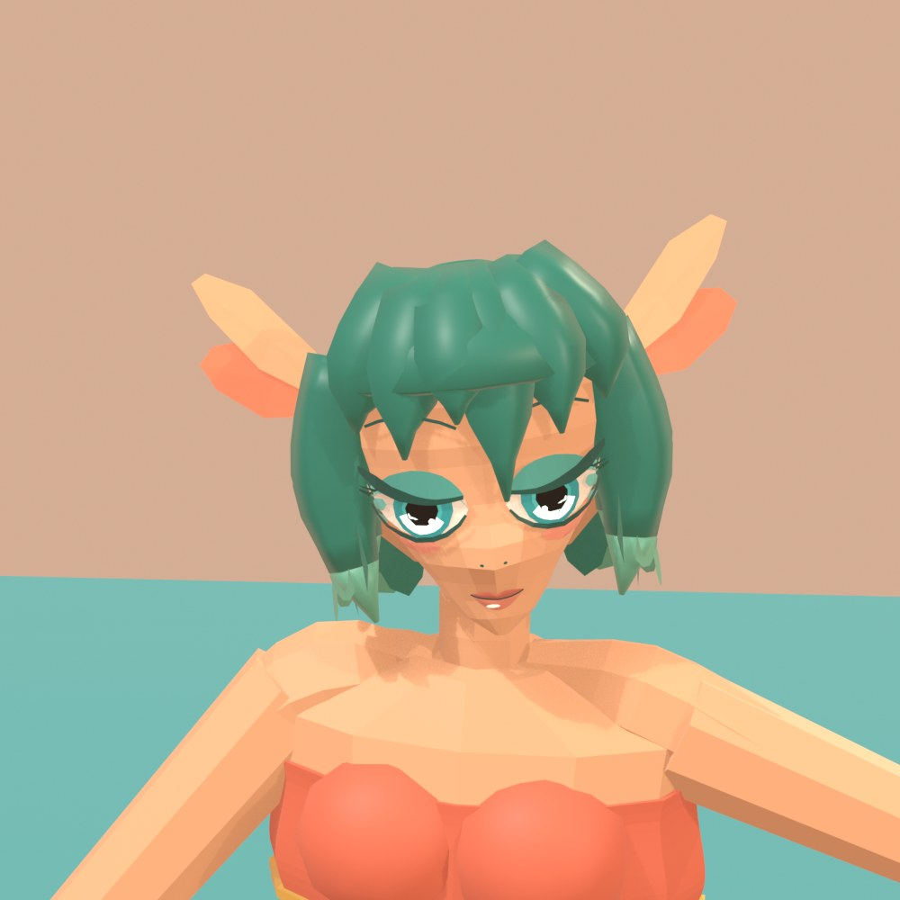

These started with a change of plan. We were halfway through a batch of animal girls when Dani asked for more chimera in them, naming sphinxes and harpies and the kind of creature furry artists draw with a girl's torso and head on a dragon's lower half. The series until then had been women wearing animals as costumes. These needed a second body.
So the existing figure kit got a companion. A woman's torso is built as usual, then it rises out of the front of a barrel running back along the ground, and the barrel gets jointed legs, shingled scales or fur, and wings. The figures below are in the order they were made, and nearly all of them use it.
This was the one Dani described, so she came first. The idea worked on the first render, but she stood small and washed out on a pale stage with legs like sticks. The legs got about a quarter thicker, the stage went to a darker terracotta so the green could hold, and the camera moved in. The lowest scales climb her waist, which hides the join between woman and dragon and turned out to be the detail that sells it.

Her cheek scales first ran in a line down from the eye and looked like beads of tears. They came off, then came back later as a patch along the cheekbone.

We went Greek and skipped the Egyptian headcloth, which gave her tall sickle wings, a flat bronze crown and ringlets. She was first holding a riddle on a wax tablet. It looked exactly like an iPad, so it went, and her hand went down to rest near her paw. The wings began as thin bars with their feathers lying along them. Turning the feathers outward gave them the fan they have now.

Her face took the most correcting of the first four. Dark skin with big white-ringed eyes read as a caricature, so the skin went warmer and the lids came down. Then the crown and her curls shaded her face grey, and the blue stage turned what was left of the skin mauve. Taking their shadows off and adding a warm light from the front fixed both.


A harpy eagle gave us the slate wings, the black band across a pale chest and the double crest. Her arms are wings all the way, with a few claws left at the wrist. The landing pose makes the most of the span, though it leaves her small in the wide shot. Her first render had the talons sitting on the column with a gap below her legs, because the bottom bone of the leg had simply never been built.


The scorpion tail arcing over her head set the silhouette straight away, though at first its plates had gaps and read as a string of beads. Overlapping them fixed that. Her mane was the real problem. Feathers fanned out flat around her head looked like a sunflower, so they were redone to fall back and down from the crown.

Dani then wanted faces that were more ethereal, more beautiful and more animal while staying cute and alluring. That note was meant for the next round, but we took it as a redo of these four, and Dani let it stand. The kit's stock faces were flat templates, and working on four heads at once took a few passes.

The first try had narrow almond eyes and black fan lashes, and it looked like harsh stage make-up. The second is the one above, softer but with huge lit eyes. The faces on the figures sit in the middle, with a mid-sized iris lit from a crescent at the bottom, pastel shadow on the lids, tinted lashes and shaped lips. The animal also moved into the face at this point, with cat noses, whiskers, feather brows and a single fang.
For the next round we started a separate file that renders heads and nothing else. Its first version gave them real muzzles and a beak, built as parts and attached. Dani's verdict was that they looked disjointed and it was ruining their cuteness, and that they should have the subtle pointed snout of an anime girl.

So the muzzles came off, and the head mesh itself now comes forward to a soft point at the nose. Dani then sent a how-to-draw chart from Anime Outline, and we rebuilt the head from its proportions. That means a round skull and a wedge jaw, with the eyes at the halfway line, the nose at three quarters and the mouth at seven eighths, under a bob with a jagged hem. A tiger character sheet Dani shared later gave us dark ear tips, fluff inside the ears and lighter ends on the hair.
The eyes went round and owlish before they went narrow and half-lidded again. Dani caught the lips clipping into the face, which came from each lip point being pushed out along a different flat facet, so they were rebuilt as small soft patches pushed straight forward. Dani also asked for more variety in the eyes, and from here each figure's are set on their own.

This one came out of another thread running at the same time. We had been building monsters and mechs from scratch in a separate, harder-edged kit, and two of the hullforge figures stood out to Dani, a hermit crab diving mech and a harvestman undertaker. Dani asked for chimera-girl versions in the old monster-girl style, with more human faces, so the figure kit came back for these two while the creatures stayed as they were.
She rises off the crab with her helmet open around her face and its port swung to one side, and air hoses run back to a copper spiral shell. Her first save went straight over the hermit crab already in this series, the one lounging in a conch. That figure had to be restored, and this one took her name from Clibanarius, a hermit crab genus that shares a word with Rome's armoured cavalry. The crusher claw also came out smaller than planned, and the shell still shows under her from the front.

Her face uses the earlier helpers, since the lab's new head wasn't on a figure yet. The heavy lids and the blotchy skin under her eyes stayed.


We picked her as the opposite of Clibana, all thin legs where the crab is wide and heavy. She wears a top hat with a side veil, a bone corset over a glowing heart and a rosary, and swings a funeral censer from one hand. The leg span gives her a great outline and leaves her face small in the wide shot, a problem Arachne would run into straight after.

Her eye shadow is heavier than the notes we had from Dani, and the gown is still a little ragged where it meets her neck.

This was the first figure to wear the new head, and she has all three animals of the myth in a row: lion, goat, snake. Her first render had the snake's head sitting on her face, thanks to a rotation around the wrong point. Her mane looked like a grass skirt until it got shorter and tighter. The teal stage turned her skin green, which is why she stands on warm umber now. The goat horns started small and hidden behind round ears, so the horns grew and the ears moved out to the side.

A few fixes from this round went onto every figure after her. The ball-shaped shoulders became a slope from the neck into the arm, and the blocky crown of the hair got smooth shading. A small hole at the very top of the hair got plugged too.

She worked early, and most of the changes were about balance. Her wings dwarfed her torso, so they came in by about a fifth. Her crest stood up like mouse ears, so it became plumes lying back off the temples. Her skin went grey against the blue, and she got the same warm front light Phix needed.


A deer's frame covered in jade scales, with antlers and a plume tail. Her clouds came out flat and looked like a scatter of pebbles, so they were heaped into clumps. She also stood too squarely on four straight legs. Now she is mid-step with one foreleg tucked up. The flames along her spine read as yellow bumps until they got taller and split into a shallow V, which lets them show from the front.


The eight legs make the best outline in the set, and the worst framing, since the spread leaves her small in the wide shots. Her pink chevrons were first buried inside the abdomen, so they were redrawn to run along its surface. The silk from her spinnerets crossed behind her head like a puppet string and had to swing out to the side. The thread between her hands went from invisible to a bright white box before settling as a small crossing fan.

Her purple skin looked flat, so it went warmer and she got black gauntlets to the elbow. Her glossy black also threw hard highlights around the body, and everything went matte.


The other thread's next pair went badly. They were built from photos in Dani's reference library and came out buried in costume, with fins, a tutu and a ruff on one, and a diadem, a cape and a telescope on the other. Dani called them the worst yet, and they were scrapped. They had started from a costume idea and kept adding to it, where Mirage and Neota, Dani's favourites in the wider series, have a real face, a bent pose, one clear silhouette and two colours.
Mobula and Dynasta were built to that recipe, with the library used only for colour and shape. Strictly they aren't chimeras, because neither has a second body. They wear the animal as the older figures do, and they're here because they came out of the same run.

She is up on one toe and banking, with one big diamond of wing held along her arms. The whip tail and the two curled head fins are the only extras. The navy and bone palette and the long diagonal both came from library photos. Up close the wing is one large flat shape, with only its bone edge for detail.


A hard landing on one knee and one fist, with a single forked horn and domed wing cases flared behind her. The green, amber and cobalt came from one library photo. The horn is at its best in three quarters, since from the front its curve leans toward a banana. Her arms look thin beside it, and the hip armour is small.


Dani's next note was to combine this simpler style with the way the heron mech had been built. That turned into the hull girls, who have their own page.

The double tail comes from old coats of arms, and the small dragon wings come from the legend. Her chest band was pearl at first, close enough to her skin that it read as bare. It went violet, a lesson we had already learned once on this series and forgot. Round pupils came in with this set, and hers looked startled until they got smaller and the lids came down.


She is the only one on the new head who stands on two legs. The rooster gave her a comb through the hair, spurs and a feather skirt, and its wattles turned into red drop earrings. Her snake tail first ran out behind her in one straight stiff line, so it got a proper curl with a barbed tip lifted off the ground. The black sickle plumes over it were thin as wire until they were widened.


Horse in front, fish behind, with coral fins at the fetlocks and a sail along the tail. Like Melusina she started with a band too near her skin colour, and it went coral. Her wave was the same teal as the sea, so it disappeared until it was lightened. The stage is a warm peach to keep her skin clear of the green that caught Chimaera.



The joke of her is that she stays calm above the waist. The first dogs had small heads on flat necks and looked like rats, so their heads grew by nearly half and their necks now arch up from her waist before dropping toward you. They still crowd her in the wide shot. The tentacles worked first time, and they are the last thing we built.

Homara, Ermina, Aptena, Bonasa and Alpa are the animal girls we were halfway through when the plan changed, so they were made before everything above. They wear the animal as the older figures do, with no second body.